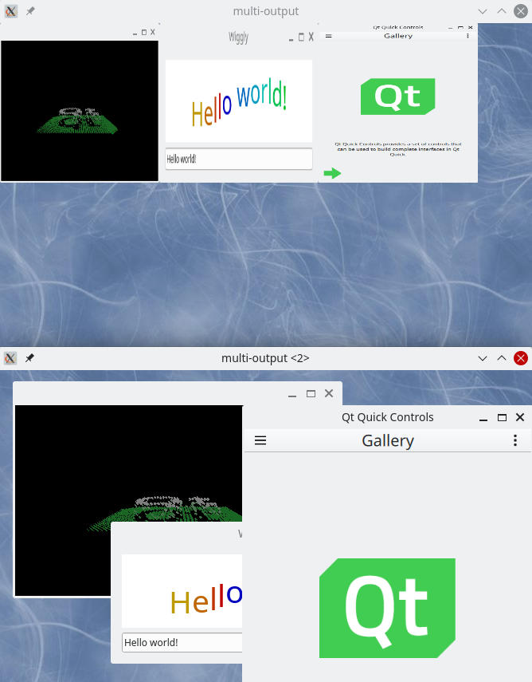

Qt Wayland Compositor Examples - Multi Output
Multi Output is an example that demonstrates a compositor with multiple outputs.
Introduction
The Multi Output example demonstrates how to display the same clients on different WaylandOutputs with different types of composition. One output shows the clients in a uniform grid, scaled to the same size. The other output is a normal desktop-style interactive compositor window.

For an introduction to the basic principles of creating a Qt Wayland Compositor with Qt, see the Minimal QML example.
Multiple Outputs
The example creates two different windows, one for each output. For the grid view, we connect to the surfaceRequested signal. This signal is emitted for every surface that the client creates. This allows the application to override the default response to the request and create a custom WaylandSurface.
onSurfaceRequested: { var surface = surfaceComponent.createObject(comp, { } ); surface.initialize(comp, client, id, version); }
Upon receiving the signal, the example creates a WaylandQuickItem as a view of the surface. This can be added to the Qt Quick scene like any other item. In the example, we add it to a GridView.
For the desktop-style window, we use the features of the XdgShell extension. When the surface has been created, the XdgShell emits a toplevelCreated signal.
XdgShell { onToplevelCreated: { var item = chromeComponent.createObject(defaultOutput.surfaceArea, { "shellSurface": xdgSurface } ); item.surface.activated.connect(item.raise); } }
We create a ShellSurfaceItem to add the XdgToplevel to the second output. This enables desktop-style interaction with the surface.
When these steps are done, the client's contents are visible in both windows. The buffers containing the client's contents are the same for both the outputs, but are visualized in two different ways, and provide different ways for the user to interact with them.
Note: In order to support multiple Wayland outputs in the same compositor, the Qt::AA_ShareOpenGLContexts attribute must be set before the QGuiApplication object is constructed.
See also Qt Wayland Compositor Examples - Multi Screen and Qt Wayland Compositor Examples - Overview Compositor.